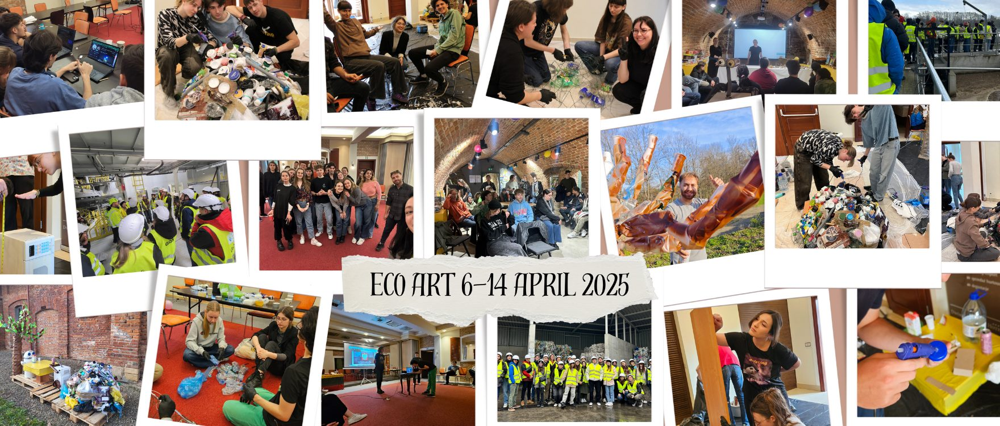
Erasmus+ Youth Exchange · Project story
EcoArt: Turning Trash into Treasure
Transforming trash into art, raising environmental awareness and inspiring action through creativity.
- When
- 6–14 April 2025
- Where
- Krosno, Poland
- Who
- 28 young people
- From
- Poland, Hungary, Lithuania, Romania
- Subjects
- Upcycled art, digital skills
01
The mission
From 6 to 14 April 2025, Krosno became a hub of creativity, sustainability and international friendship through EcoArt: Turning Trash into Treasure, an Erasmus+ Youth Exchange organised by Fundacja Patrz Globalnie. The project brought together 28 young people from Poland, Hungary, Lithuania and Romania to address one of today’s most pressing issues: non-biodegradable waste.
Our mission was clear: transform trash into art, raise environmental awareness, and inspire action through creativity. Beyond the workshops, EcoArt gave participants the chance to develop digital skills, embrace AI-powered creativity, and take part in inclusive, intercultural learning.
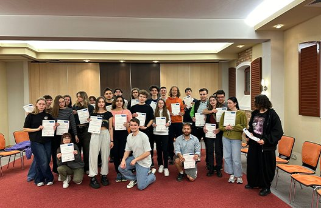
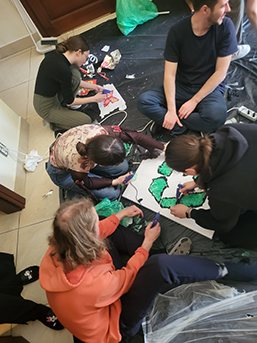
02
Inside the recycling centre
One of the project’s highlights was an educational visit to MPGK Krosno, the city’s municipal waste management and recycling centre. We explored the entire waste processing cycle, from sorting recyclables to treating organic waste, and discovered how advanced composting and fermentation systems produce biogas and renewable electricity.
At the centre’s interactive Education Point, we learned how small lifestyle choices affect the environment and saw first-hand how circular economy principles work in practice. For many, this visit was an eye-opener, bridging the gap between theory and real-world solutions.
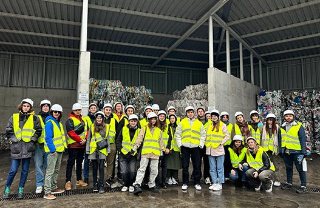
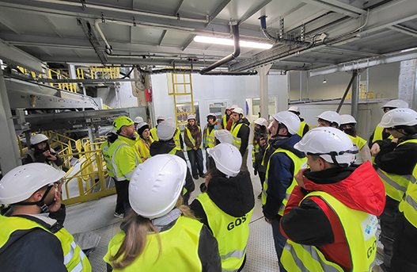
03
The workshop
Back at our workshop space, creativity flourished as participants rolled up their sleeves and turned discarded materials into art. From colourful mosaics and playful toys to thought-provoking sculptures, every piece told a story of transformation and hope.
Guided by facilitators and inspired by local artist Piotr Burger, participants discovered how upcycling can become an educational tool and a powerful message about environmental responsibility. Piotr praised the works for their playful forms and strong themes, saying they could be a key element in teaching younger generations about sustainability.
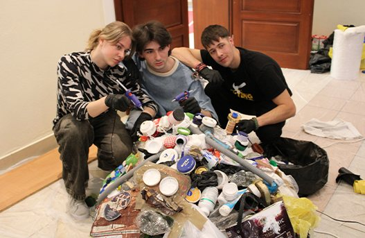
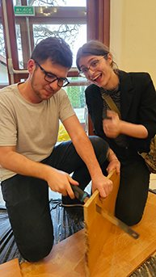
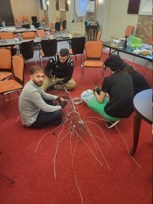
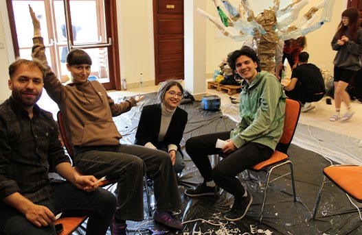
04
The exhibition
To share these messages with the community, we organised a public event at the Krosno Youth Centre together with Piotr Burger, attracting over 100 attendees, including local young people and children from orphanages. Participants proudly exhibited their creations, explained the idea behind each piece, and led interactive activities promoting recycling and creative reuse. Piotr also brought some of his own creations and inspired us for our future work.
The event proved that art can be more than decoration: it can spark dialogue, educate and inspire change. Our works are now on permanent display at the MPGK Education Point, so EcoArt’s impact continues well beyond the project.
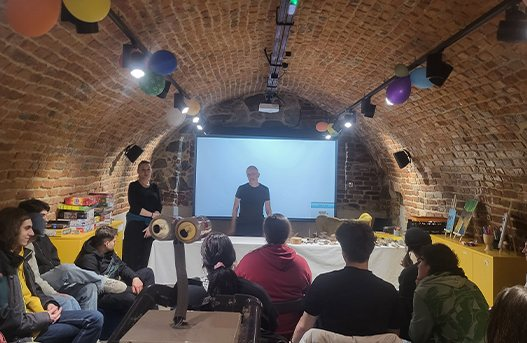
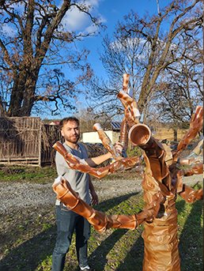
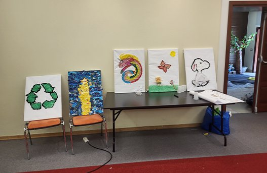
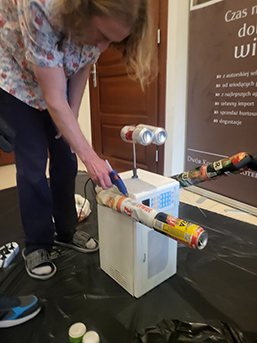
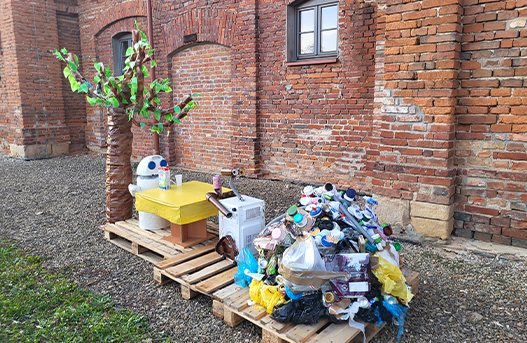
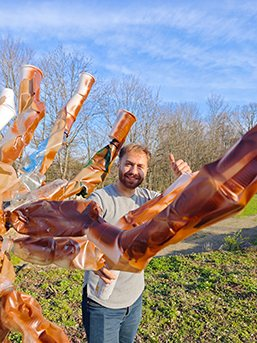
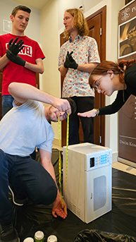
Artworks and exhibition · scroll sideways for more →
Videos come from YouTube (Google) and load only when you press play. How we handle this
05
People and culture
Beyond environmental action, EcoArt was also about people and culture. Through intercultural evenings, traditional food and shared dances, we learned about each other’s heritage. These moments of laughter and exchange created friendships that crossed borders and broke stereotypes.
Together, we didn’t just create art: we built a community of young changemakers, ready to take these ideas home and launch future initiatives like our upcoming Green Week campaign in schools.
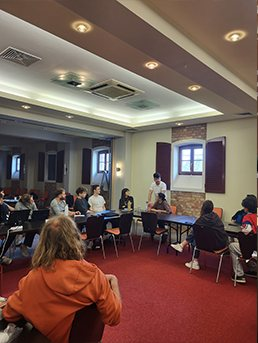
EcoArt proved that when creativity meets responsibility, trash truly can become treasure.
Thank you
We are proud of the impact EcoArt created in Krosno and beyond, and grateful to the local media and institutions who shared our story and helped us inspire more people to act for the planet.